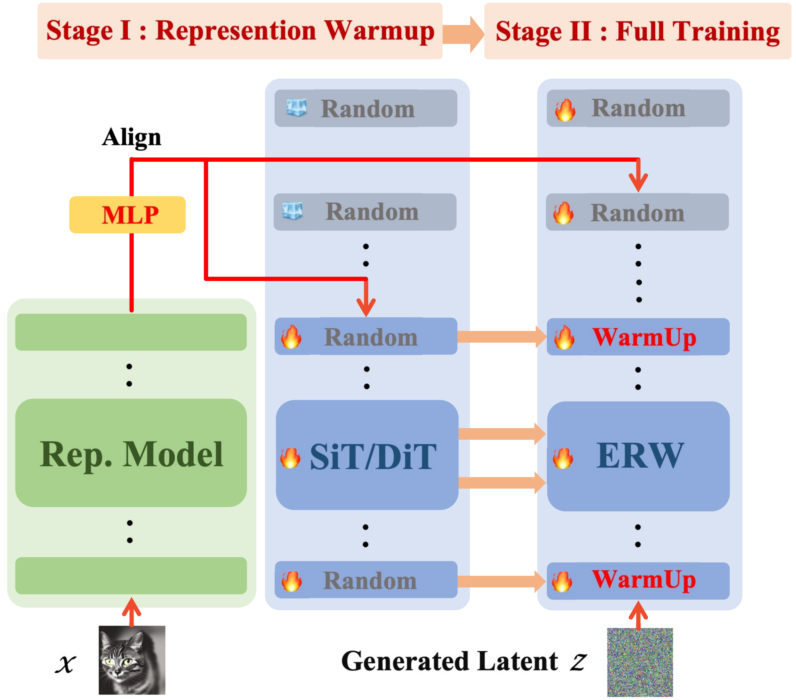
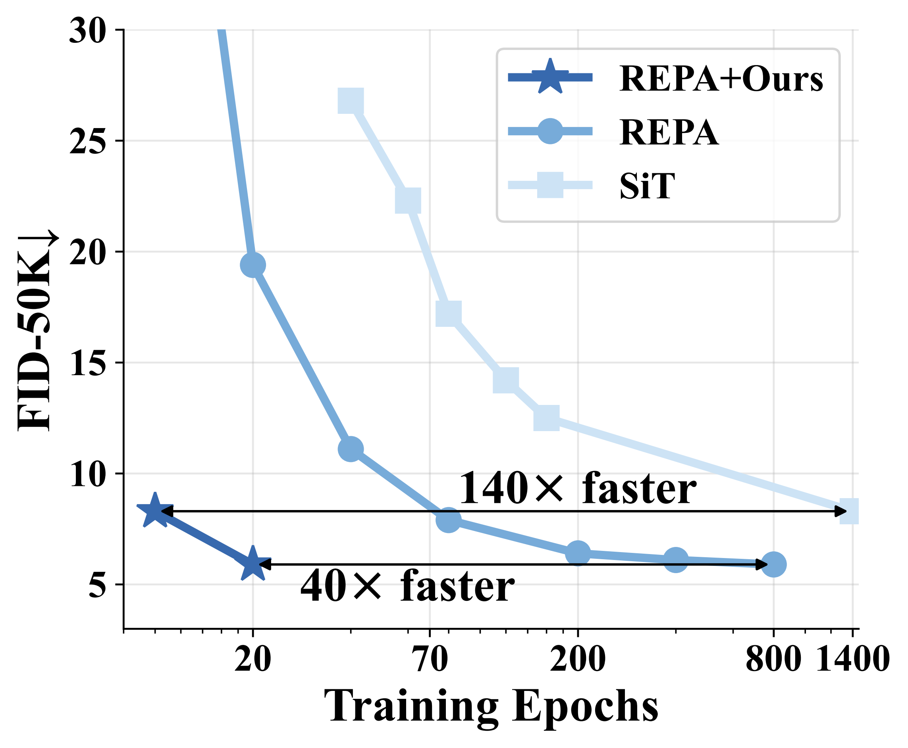
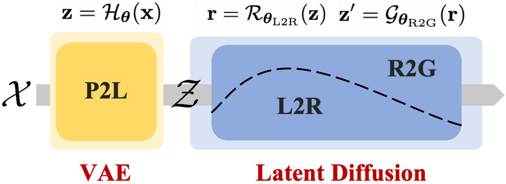
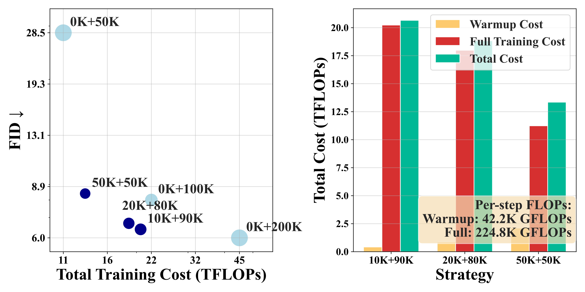
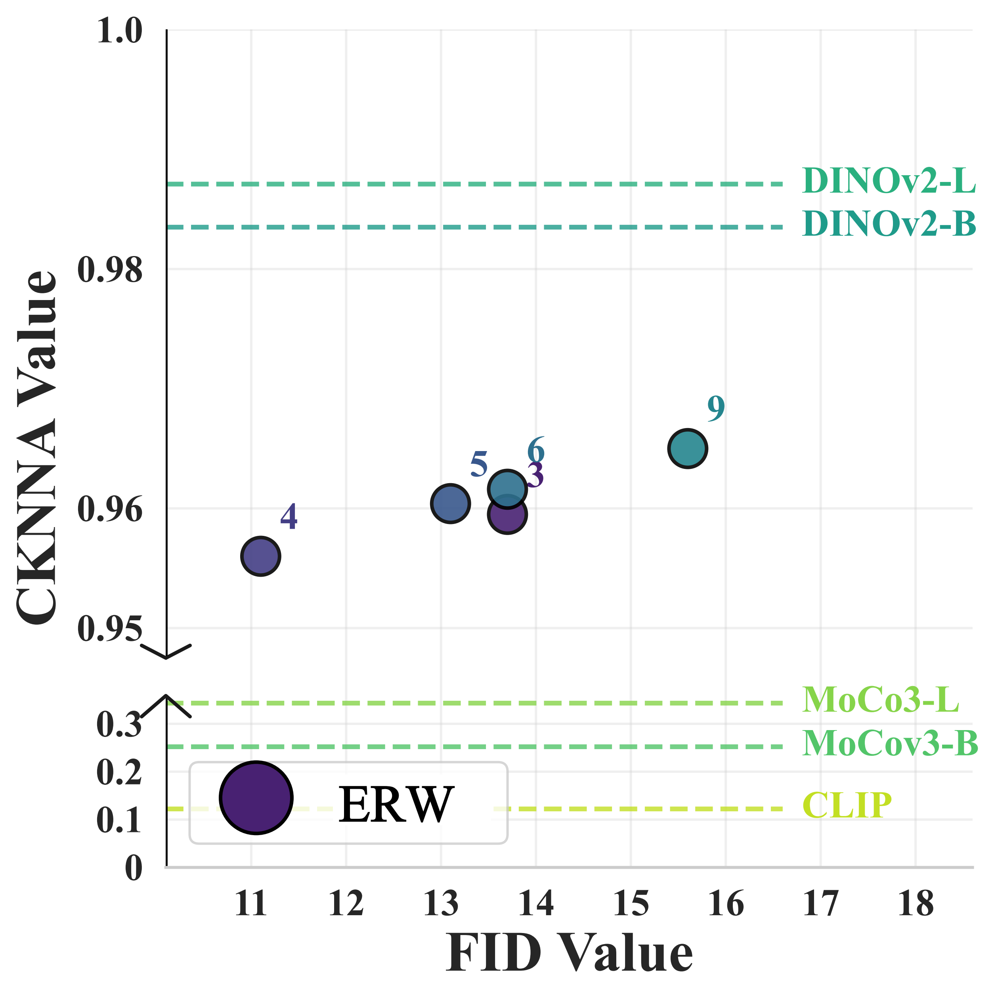
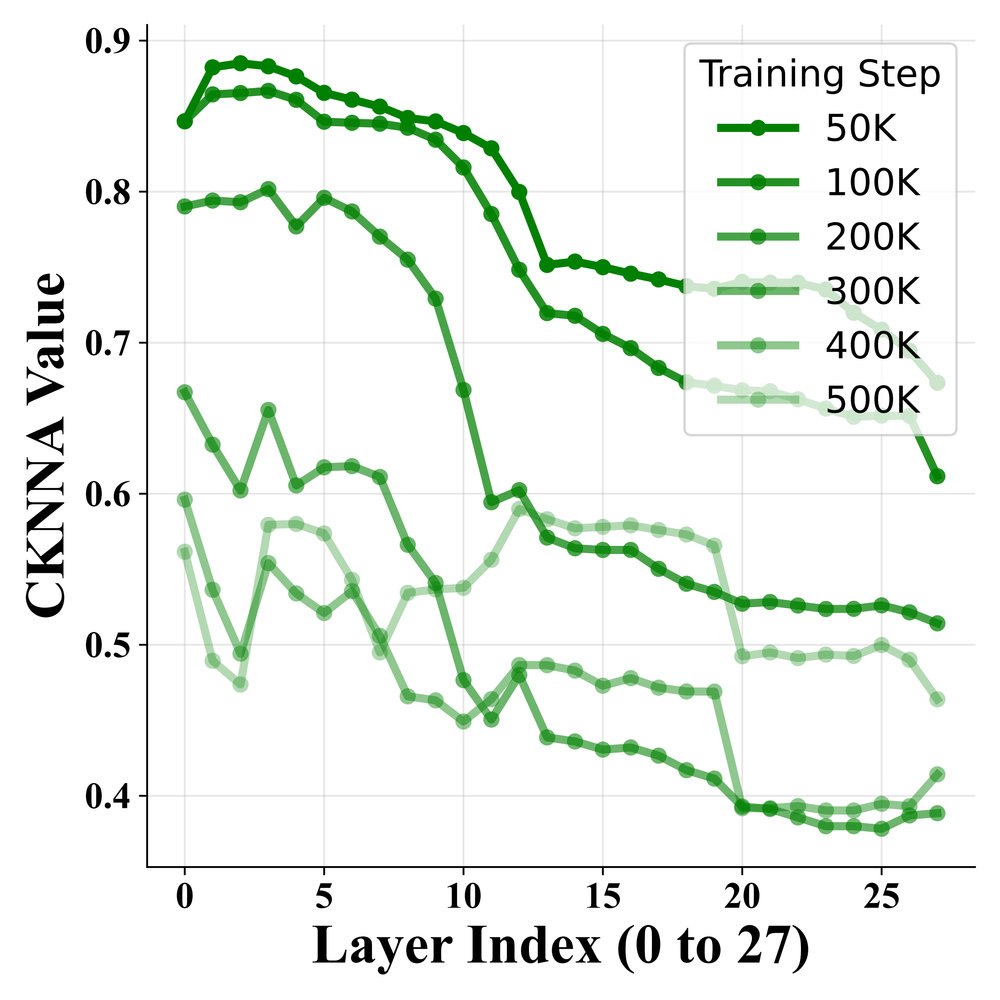

Figure 1: Selected Samples on ImageNet 256×256. Images generated by the SiT-XL/2 + REPA + ERW model using classifier-free guidance (CFG) with a scale of w=2.2 under 40 epochs.


Figure 2:Embedded Representation Warmup (ERW). Throughout the training process, we demonstrate that incorporating representations at the early stages is highly beneficial. To this end, we propose a representation warmup stage that employs a representation alignment loss to integrate representations from models such as Dinov2 into the ERW. This initialized representation region is subsequently embedded into the diffusion model pipeline, providing a strong starting point for training.
Summary
Diffusion models have made impressive progress in generating high-fidelity images. However, training them from scratch requires learning both robust semantic representations and the generative process simultaneously. Our work introduces Embedded Representation Warmup (ERW) -- a plug-and-play two-phase training framework that:
Phase 1 -- Warmup: Initializes the early layers of the diffusion model with high-quality, pretrained visual representations (e.g., from DINOv2 or other self-supervised encoders).
Phase 2 -- Full Training: Continues with standard diffusion training while gradually reducing the alignment loss, so the model can focus on refining generation.
Key Idea: Three-Stage Diffusion Circuit
We propose a three-stage diffusion circuit as a structured framework for more effective and interpretable generative modeling:

Figure 3: Illustration of the Three-Stage Diffusion Circuit. From left to right, we first apply a VAE encoder (the Pixel-to-Latent or (P2L) stage) to map high-dimensional inputs to a compressed latent space. We then perform latent diffusion on these codes, dividing the backbone into two subregions: the Latent-to-Representation(L2R) region that capture and refine semantic features, and the Representation-to-Generation(R2G) region that decode the learned representation into final outputs.
Our guiding hypothesis is that conventional diffusion methods entangle representation learning and generative decoding within the denoising process, burdening the network with two inherently distinct tasks. By explicitly isolating the semantic processing (L2R) from the generative inversion (R2G), our approach promotes modularity and simplifies the overall optimization landscape.
Results
Comparison to State-of-the-Art Methods
Model
Epochs
FID↓
sFID↓
IS↑
Pre.↑
Rec.↑
Latent diffusion, Transformer
DiT-XL/2
1400
2.27
4.60
278.2
0.83
0.57
SiT-XL/2
1400
2.06
4.50
270.3
0.82
0.59
REPA
200
1.96
4.49
264.0
0.82
0.60
ERW (ours)
40
1.94
7.91
300.9
0.75
0.63
Table 1: System-level comparison on ImageNet 256×256 with CFG. ↓ and ↑ indicate whether lower or higher values are better, respectively.
Training Efficiency and Cost Analysis

Figure 4: Comparison of Training Efficiency and Cost Analysis with Warmup and Full Training Stages. Left: Scatter plot depicting the relationship between the total training cost (in TFLOPs) and the FID score for various training strategies. Right: Bar chart comparing the computational costs of the warmup and full training stages for different strategies (all evaluated over 100K iterations).
Rapid Convergence Without Classifier-Free Guidance
Model
#Params
Iter.
FID↓
sFID↓
IS↑
Prec.↑
Rec.↑
SiT-XL/2
675M
7M
8.3
6.32
131.7
0.68
0.67
REPA
675M
50K
52.3
31.24
24.3
0.45
0.53
ERW (ours)
675M
50K
8.5
9.59
154.7
0.72
0.51
REPA
675M
100K
19.4
6.06
67.4
0.64
0.61
ERW (ours)
675M
100K
6.0
6.37
207.5
0.67
0.63
Table 2: FID comparisons with SiT-XL/2 on ImageNet 256×256 at various training iterations without classifier-free guidance.
Ablation Studies and Analysis
Effect of ERW Placement
Our hypothesis states that early layers in the diffusion backbone primarily learn semantic features (the L2R circuit), whereas deeper layers specialize in generative decoding.
Target Repr.
Depth
Objective
FID↓
sFID↓
IS↑
Prec.↑
Rec.↑
SiT-B/2 + REPA
-
-
78.2
11.71
17.1
0.33
0.48
DINOv2-B
0-8
NT-Xent
54.2
8.12
27.2
0.45
0.59
DINOv2-B
1-9
NT-Xent
69.1
13.0
18.7
0.37
0.51
DINOv2-B
2-10
NT-Xent
67.7
13.4
19.0
0.38
0.52
Table 3: Analysis of ERW placement influence in SiT-B/2. All models are trained for 50K iterations under the batch size of 256 without using classifier-free guidance on ImageNet 256×256.
Empirical evidence confirms that initializing the earliest layers (0-8) notably outperforms re-initializing middle or late sections, corroborating our three-stage diffusion circuit theory.
Projection Depth and Alignment Weight Optimization
ERW Depth
Proj. Depth
λ
FID↓
sFID↓
IS↑
Prec.↑
Rec.↑
4
14
0.1
21.6
19.58
74.9
0.62
0.49
4
14
0.5
12.4
16.97
124.3
0.68
0.48
4
14
2.0
9.0
11.17
151.2
0.72
0.51
4
14
4.0
8.6
9.84
153.6
0.72
0.51
4
14
6.0
8.8
9.46
151.1
0.71
0.52
Table 4: Analysis of ERW depth, projection depth, and different alignment loss weights (λ) for SiT-XL/2. All models are trained for 50K iterations without classifier-free guidance.
Using 4 warmup layers, a projection head at depth 14, and λ=4.0 achieves an FID of 8.6 at 50k iterations--a substantial gain over baselines.
Representation Dynamics During Training


Figure 5: Scalability of ERW. (a) Alignment with ERW plot showing high degree of alignment across all ERW depths. (b) Training dynamics for alignment indicate that within the 500K training steps for SiT-XL/2, the alignment between DINOv2-g and the diffusion model first decreases and then increases.
Representation alignment follows a U-shaped trajectory, revealing the model's gradual reconfiguration of pretrained features for denoising tasks before distilling them into robust, generative-friendly embeddings.
Target Representation Model Selection
Target Repr.
Depth
Objective
FID↓
sFID↓
IS↑
Prec.↑
Rec.↑
MoCov3-B
8
NT-Xent
61.1
7.6
22.38
0.42
0.58
MoCov3-L
8
NT-Xent
73.0
8.0
17.96
0.38
0.52
CLIP-L
8
NT-Xent
58.9
7.7
23.68
0.44
0.54
DINOv2-B
8
NT-Xent
55.6
7.8
25.45
0.44
0.56
DINOv2-L
8
NT-Xent
55.5
7.8
25.45
0.44
0.56
DINOv2-g
8
NT-Xent
59.4
7.6
25.53
0.44
0.56
Table 5: Analysis of different target representation models for ERW on ImageNet 256×256. All models are SiT-B/2 trained for 50K iterations.
All encoders tested offer improvements over baselines, indicating that ERW can broadly benefit from a variety of strong representation models. DINOv2 variants yield comparable gains, suggesting that ERW does not require the largest possible teacher encoder for effective representation transfer.
ERW Depth Optimization
ERW Depth
Proj. Depth
λ
FID↓
sFID↓
IS↑
Prec.↑
Rec.↑
3
8
0.5
13.3
13.65
113.2
0.69
0.48
4
8
0.5
11.7
17.93
114.5
0.68
0.48
5
8
0.5
13.1
15.25
117.0
0.69
0.48
6
8
0.5
13.7
16.62
115.7
0.68
0.49
8
8
0.5
15.6
16.42
104.0
0.67
0.46
12
8
0.5
19.2
16.91
87.8
0.65
0.48
Table 6: Analysis of ERW depth for SiT-XL/2. All models are trained for 50K iterations without classifier-free guidance.
The results show that ERW is most effective when applied to the early layers of the diffusion model (depths 3-5), with performance degrading as more layers are included. This confirms our hypothesis that representation learning primarily occurs in early layers, while later layers focus more on generative refinement.
@misc {liu2025efficientgenerativemodeltraining,
title={Efficient Generative Model Training via Embedded Representation Warmup},
author={Deyuan Liu and Peng Sun and Xufeng Li and Tao Lin},
year={2025},
eprint={2504.10188},
archivePrefix={arXiv},
primaryClass={cs.LG},
url={https://arxiv.org/abs/2504.10188},
}